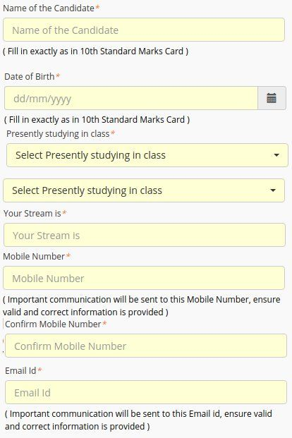

KVPY 2019-2020: Kishore Vaigyanik Protsahan Yojana 2019 is a national level exam that aims to encourage scientific temperament among the young minds of the country. The exam is conducted by the Indian Institute of Science (IISc), Bangalore. The candidates who qualify the exam get a scholarship till the pre-Ph.D. level. The courses for which fellowships are awarded are B.Sc., B. Stat, Integrated M.Sc. and M.S in either Mathematics, Physics, Chemistry, or Biology.
KVPY Application Form 2019 has been released on 8th July 2019. The last date for the submission of the form is 20th August 2019. KVPY Exam will be conducted on 3rd November 2019. Find the direct link of the Application form from below.
Fill KVPY Application Form 2019
- KVPY Interview Schedule has been released and the interview is starting from 22nd January 2020. Click Here to get details.
- KVPY 2019 Online Registration has been started on 8th July 2019.
- The eligibility criteria are different for every post, applicants must fulfill the complete eligibility to apply for the program. Check KVPY Eligibility
- Interested and eligible candidates can submit their applications on the official website till 20th August 2019.
- The exam will be conducted in computer-based mode. Read more to Know KVPY Exam Pattern
- KVPY 2019 Result has been released on 11th December 2019.
- The selection of candidates is done through aptitude test and Interview round.
- KVPY Answer Key has been released on 7th November 2019.
KVPY Highlights
| Exam Name | KVPY (Kishore Vaigyanik Protsahan Yojana) |
| Conducting Authority | Indian Institute of Science |
| Streams | SA, SB, and SX |
| Exam Centres | 54 Centres Pan India |
| Exam Date | 3rd November 2019 |
| Nationality | Citizen of India |
| Official Website | www.kvpy.iisc.ernet.in |
KVPY Important Dates
The exam will be held in two rounds, a pen and paper test in round 1 and an interview for those who clear round 1. The events have been tabulated below in chronological order
| Event | Dates |
| Commencement of online application | 8th July 2019 |
| Fees payment deadline | 20th August 2019 |
| Availability of admit cards for KVPY | 7th October 2019 |
| KVPY 2019 examination | 3rd November 2019 |
| Declaration of results | 11th December 2019 |
| Commencement of the Interview Rounds | 22nd January 2020 |
| Announcement of Final Result | March 2020 |
Documents Required for Interview Schedule
- Interview call letter (can be downloaded from the official website using login credentials).
- Attested copy of Marks list (10th Marks card for Stream SA/SX and 12th Marks card for Stream SB).
- Caste certificate for ST/SC candidates issued by the concerned authority.
- Medical certificate in case of physically and visually challenged students in the prescribed format (As per GOI)
- A Self-Appraisal form.
- Study certificate form (can get it from Principal/Head of the Institution where you are currently pursuing your studies)
- Teacher Recommendation Form (in a sealed envelope)
KVPY Interview Centres 2020
| Sl. No. | Centre | Interview Venue (Tentative) | Interview Date (Tentative) |
| 1 | Allahabad (Prayagraj) | HRI Allahabad | February 2020 |
| 2 | Bengaluru | KVPY, IISc. | February 2020 |
| 3 | Bhopal | IISER-Bhopal | February 2020 |
| 4 | Bhubaneswar | NISER-Bhubaneswar | February 2020 |
| 5 | Chennai | IIT-Madras | February 2020 |
| 6 | Coimbatore | Bharathiar University | February 2020 |
| 7 | Delhi – I | IIT-Delhi | February 2020 |
| 8 | Delhi – II | JNU | February 2020 |
| 9 | Delhi – III | Delhi University | February 2020 |
| 10 | Delhi – IV | Shiv Nadar University-Delhi | February 2020 |
| 11 | Gandhinagar | IIT Gandhinagar | February 2020 |
| 12 | Hyderabad – I | IICT – Hyderabad | February 2020 |
| 13 | Hyderabad – II | IITH – Hyderabad | February 2020 |
| 14 | Hyderabad – III | University of Hyderabad | February 2020 |
| 15 | Jaipur – I | MNIT-Jaipur | February 2020 |
| 16 | Jaipur – II | LNMIIT-Jaipur | February 2020 |
| 17 | Jodhpur | IITJ-Jodhpur | February 2020 |
| 18 | Kolkata – I | IISER-Kolkata | February 2020 |
| 19 | Kolkata – II | IACS-Kolkata | February 2020 |
| 20 | Kolkata – III | JBNSTS-Kolkata | February 2020 |
| 21 | Mohali | IISER-Mohali | February 2020 |
| 22 | Mumbai | IIT-Bombay | February 2020 |
| 23 | Pune | IISER-Pune | February 2020 |
| 24 | Trivandrum | NIIST-Trivandrum |
KVPY Eligibility Criteria
The student must be a citizen of India.
| Courses | Eligibility Criteria |
| SA Stream | Students enrolled in the XI Standard (Science Subjects) during the academic year 2019-20 and having secured a minimum of 75% (65% for SC/ST/PWD) marks in aggregate in MATHEMATICS and SCIENCE subjects in the X Standard Board examination |
| SX Stream | Students enrolled in XII Standard/ (+2) (Science subjects) during the academic year 2019–20 and aspiring to join undergraduate program in Basic Sciences namely Physics/Chemistry/Mathematics & Biology leading to B.Sc. /B.S./B.Stat./B.Math./Int. M.Sc./Int. M.S. for the session 2020–21 provided they have secured a minimum of 75% (65% for SC/ST/PWD) marks in aggregate in MATHEMATICS and SCIENCE subjects (Physics/Chemistry/ Biology) in the X Standard Board Examination during the academic year 2017-18
Students in their 2nd year of study in Cambridge International Examination Board and aspiring to join a UG program (viz. B.Sc. /B.S./B.Stat./B.Math./Int. M.Sc./Int. M.S.)in Basic Sciences namely Physics, Chemistry, Mathematics and Biology in the Academic year 2019-20 are eligible to apply provided they have secured a minimum of 75% (65% for SC/ST/PWD) marks in aggregate in MATHEMATICS and SCIENCE subjects (Physics/Chemistry/Biology) in the X Standard Board Examination |
| SB Stream | Students enrolled in the 1st year of the undergraduate program in Basic Sciences namely Physics/Chemistry/Mathematics & Biology leading to B.Sc. /B.S./B.Stat./B.Math./Int. M.Sc./Int. M.S. during the academic year 2019–20 and having secured a minimum of 60% (50% for SC/ST/PWD) marks in aggregate in MATHEMATICS and SCIENCE subjects (Physics/Chemistry/Biology) in the XII Standard Board Examination immediately in the preceding academic year
In the 1st year final examination of B.Sc./B.S./B.Math./B.Stat./Int. M.Sc./Int. M.S. they must secure 60% (50% for SC/ST/PWD) marks before taking up the fellowship |
The detailed eligibility criteria can be found on http://kvpy.iisc.ernet.in/main/eligibility.htm
How To Apply for KVPY?
The mode of application for KVPY is online only. The steps to apply are as follows:
- Go to the official website http://kvpy.iisc.ernet.in/main/applications.htm
- Register using your email Id and phone number. A login ID will be generated for you.
- Re-login to the website using the auto-generated username and password.
- Fill all the details required.
- Upload the scanned copy of the photograph and signature, as well as the caste certificate( if applicable).
- Pay the fees either online using the integrated payment gateway on the KVPY official website, using either Net Banking or Credit/Debit Cards, or offline using the e-challan that can be downloaded from the site. The application fees of Rs. 1000/- (for OBC/General) and Rs. 500/- (for SC/ST/PWD) is nonrefundable once the form has been submitted.
KVPY Application Fee
- For General/OBS Category: Rs.1000 + KVAT @ 5.5% = Rs. 1055
- For SC/ST Category: Rs.500 + KVAT @ 5.5% = Rs. 528.
- Application Fee can be paid through Credit Card/Debit Card/ Net Banking or Challan.
Download KVPY Previous Year Question Papers
KVPY Exam Pattern
KVPY Exam Pattern and breakdown are as follows. The exam is held in two rounds. The first round is a pen and paper test. The test is divided into two parts, with the maximum marks of 100. The 3 hours test has objective type questions. The candidates who qualify the written test are then supposed to attend the interview round.
Stream SA
| Subjects | No of Questions | Total Marks | |
| Part – I | Part – II | ||
| Mathematics | 15 | 5 | 25 |
| Physics | 15 | 5 | 25 |
| Chemistry | 15 | 5 | 25 |
| Biology | 15 | 5 | 25 |
| Total | 60 | 20 | 100 |
Stream SB/SX
| Subjects | No of Questions | Total Marks | |
| Part – I | Part – II | ||
| Mathematics | 20 | 10 | 40 |
| Physics | 20 | 10 | 40 |
| Chemistry | 20 | 10 | 40 |
| Biology | 20 | 10 | 40 |
KVPY Syllabus
| Stream | Syllabus |
| SA | Analytical Skills, Syllabus of class 11th subjects (Physics, Mathematics, Chemistry, Biology) |
| SB | Analytical Skills, Syllabus of class 12th (Physics, Chemistry, Mathematics, Biology). |
| SX | Analytical Skills, Syllabus of their respective classes. Syllabus of class 12th (Physics, Chemistry, Biology, Mathematics). 1st year of B.Sc. / B.S. / B.Stat/ B.Math. / Int. M.Sc. / M.S. syllabus is also applicable. |
KVPY Cut Off
| Streams | Previous Years Cut off Score 2017 | ||
| General | SC/ST | PWD | |
| Stream SA | 45/100 | 35/100 | 35/100 |
| Stream SB | 43/100 | 33/100 | 33/100 |
| Stream SX | 53/100 | 43100 | 43/100 |
KVPY Admit Card
KVPY Admit Card can be downloaded from the official website using the username and password that was generated during the registration. The admit card will carry details like Applicant’s Name, Registration Number, Photograph, Date of Birth, Exam Venue, Exam Date, and Timings, etc. The cards will most likely be released in the month of October 2019.
KVPY Result 2019
IISc will declare KVPY Results 2019 in December. The candidates who qualify will have to appear in the interview round in January 2019. KVPY Merit List will be available category-wise, mentioning names and application numbers of qualifying candidates. The merit list will be based on the performance of the candidates in Round 1.
KVPY Scholarship 2019
| Basic Science | Monthly Fellowship | Annual Contingency Grant |
| SA/SX/SB – from 1st to 3rd years of – B.Sc./B.S./B.Stat./B.Math. / Integrated M.Sc. /M.S. | Rs. 5000 | Rs. 20000 |
| SA/SX/SB – during M. Sc. /4th to 5th years of Integrated M.Sc. /M.S./M.Math./M.Stat. | Rs.7000 | Rs. 28000 |
| The Fellow continues to study Basic Science courses in school/junior college/university and maintains a minimum level of academic performance of first-class or 60% (50% for SC/ST/PWD) marks in aggregate or equivalent grade points and the students have to necessarily pass all the subjects prescribed for that particular academic year (two semesters in case of semester system) and should have obtained the above-specified percentage of marks. | ||
KVPY Interview Round 2019
candidates. The personal interview will be like any other interview, a mix of questions pertaining to the Individual as well as those regarding the scientific interests of the candidate. Those who successfully defend themselves in the interview will be awarded the fellowship to pursue their interests further.
KVPY Syllabus and Preparation 2019
There is no clear prescribed Syllabus for KVPY Syllabus 2019, but the analysis of the last years’ papers show that the syllabus ranges from Class 10 to Class 12 Mathematics and Science Subjects. Therefore, students should have a clear understanding of those specific areas.
This is all about KVPY 2019. Please stay in touch with the official website for further notification. Feel free to post your queries in the comments section below.
You can also find more Scholarship Articles for 12th passed, 10th passed Students and many more.